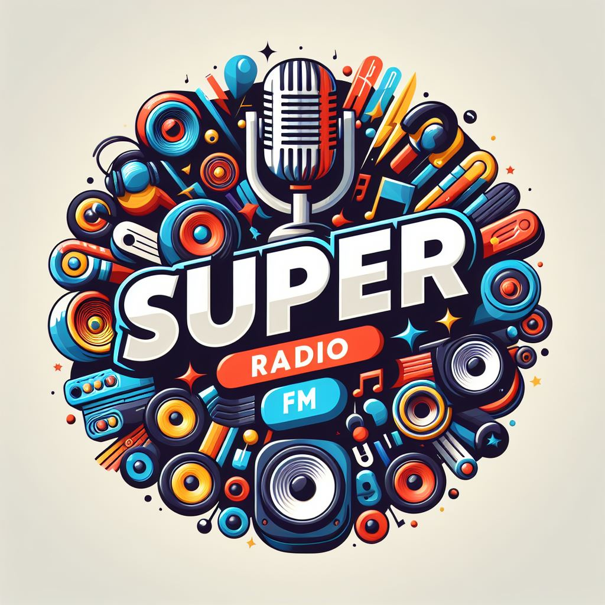
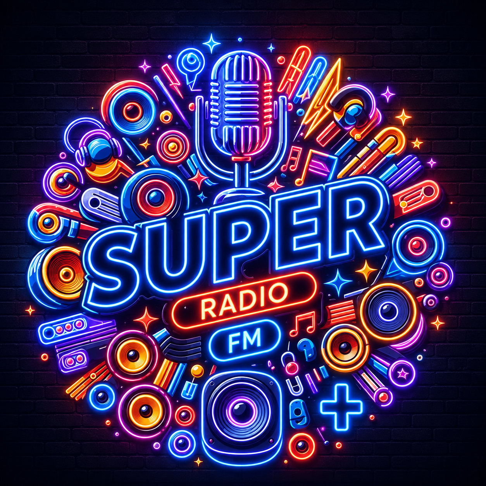

Super Cadena Independiente
El portal informativo y de entretenimiento radial más dinámico. Conecta con la señal principal de Super Radio FM, la potencia del rock en FM Plus y la señal de Televisión en vivo.
SEÑALES RÁPIDAS Y CANALES EN LÍNEA


Super Radio FM NOTICIAS — INFORMACIÓN DE LA RED
Avanza la expansión de la red S.C.I. en plataformas digitales
Con la unificación de los portales web y la integración de nuevos reproductores, la cadena fortalece su cobertura online.
Leer más →S.C.I. TV ultima detalles para su primera transmisión oficial
El canal de televisión completó sus pruebas técnicas de streaming HLS para garantizar señal HD sin interrupciones este 17 de octubre.
Ver detalles →Nuevos bloques temáticos en la señal de Super Radio FM Plus
Se confirman especiales de rock de los 80 y 90 durante las noches del fin de semana para todos los oyentes de la señal Plus.
Leer más →Crecimiento en la sintonía digital de la cadena independiente
Super Radio FM celebra el aumento de audiencia en sus canales digitales e interactivos en todas las ciudades sintonizadas.
Leer más →PROGRAMACIÓN Y EMISIONES DESTACADAS
Super Radio FM Noticias S.C.I.
El noticiero central con el resumen de los principales hechos locales, actualidad y cobertura periodística.
Clásicos y Éxitos de la S.C.I.
La mejor selección crossover y música variada en la compañía de la señal radial básica.
Lanzamiento S.C.I. Televisión en Vivo
Transmisión de inauguración del canal con contenido audiovisual especial para toda la cadena.